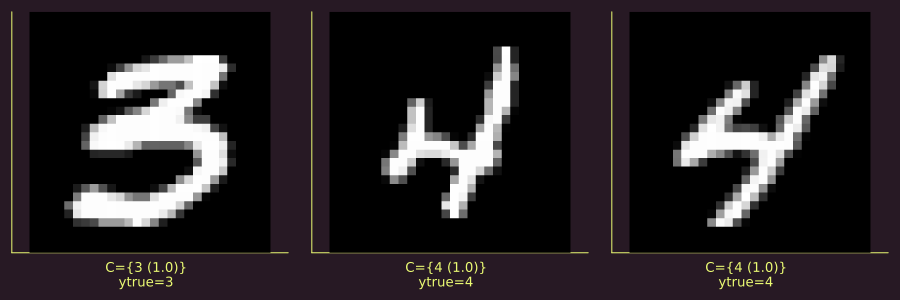
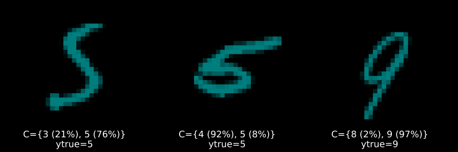
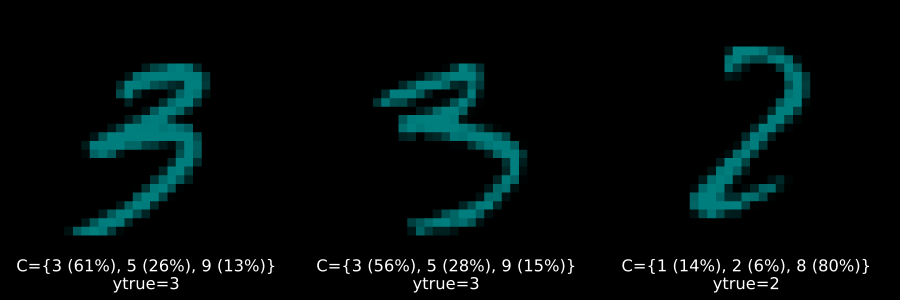
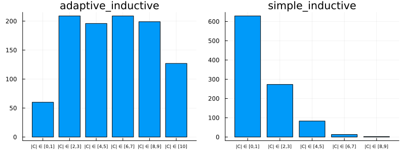

using MLDatasets
N = 1000
Xraw, yraw = MNIST(split=:train)[:]
Xraw = Xraw[:,:,1:N]
yraw = yraw[1:N]How to Conformalize a Deep Image Classifier
Conformal Prediction in Julia — Part 2
conformal prediction
uncertainty
Julia
A guide demonstrating how to use
ConformalPrediction.jl to conformalize a deep image classifier in a few lines of code.

simple Deep Image Classifier.
Deep Learning is popular and — for some tasks like image classification — remarkably powerful. But it is also well-known that Deep Neural Networks (DNN) can be unstable (Goodfellow, Shlens, and Szegedy 2014) and poorly calibrated. Conformal Prediction can be used to mitigate these pitfalls.
In the first part of this series of posts on Conformal Prediction, we looked at the basic underlying methodology and how CP can be implemented in Julia using ConformalPrediction.jl. This second part of the series is a more goal-oriented how-to guide: it demonstrates how you can conformalize a deep learning image classifier built in Flux.jl in just a few lines of code.
Since this is meant to be more of a hands-on article, we will avoid diving too deeply into methodological concepts. If you need more colour on this, be sure to check out the first article on this topic and also A. N. Angelopoulos and Bates (2021). For a more formal treatment of Conformal Prediction see also A. Angelopoulos et al. (2022).
🎯 The Task at Hand
The task at hand is to predict the labels of handwritten images of digits using the famous MNIST dataset (LeCun 1998). Importing this popular machine learning dataset in Julia is made remarkably easy through MLDatasets.jl:
Figure 1 below shows a few random samples from the training data:
using MLJ
using Images
X = map(x -> convert2image(MNIST, x), eachslice(Xraw, dims=3))
y = coerce(yraw, Multiclass)
n_samples = 10
mosaic(rand(X, n_samples)..., ncol=n_samples)![]()
🚧 Building the Network
To model the mapping from image inputs to labels will rely on a simple Multi-Layer Perceptron (MLP). A great Julia library for Deep Learning is Flux.jl. But wait … doesn’t ConformalPrediction.jl work with models trained in MLJ.jl? That’s right, but fortunately there exists a Flux.jl interface to MLJ.jl, namely MLJFlux.jl. The interface is still in its early stages, but already very powerful and easily accessible for anyone (like myself) who is used to building Neural Networks in Flux.jl.
In Flux.jl, you could build an MLP for this task as follows,
using Flux
mlp = Chain(
Flux.flatten,
Dense(prod((28,28)), 32, relu),
Dense(32, 10)
)where (28,28) is just the input dimension (28x28 pixel images). Since we have ten digits, our output dimension is ten.1
We can do the exact same thing in MLJFlux.jl as follows,
using MLJFlux
builder = MLJFlux.@builder Chain(
Flux.flatten,
Dense(prod(n_in), 32, relu),
Dense(32, n_out)
)where here we rely on the @builder macro to make the transition from Flux.jl to MLJ.jl as seamless as possible. Finally, MLJFlux.jl already comes with a number of helper functions to define plain-vanilla networks. In this case, we will use the ImageClassifier with our custom builder and cross-entropy loss:
ImageClassifier = @load ImageClassifier
clf = ImageClassifier(
builder=builder,
epochs=10,
loss=Flux.crossentropy
)The generated instance clf is a model (in the MLJ.jl sense) so from this point on we can rely on standard MLJ.jl workflows. For example, we can wrap our model in data to create a machine and then evaluate it on a holdout set as follows:
mach = machine(clf, X, y)
evaluate!(
mach,
resampling=Holdout(rng=123, fraction_train=0.8),
operation=predict_mode,
measure=[accuracy]
)The accuracy of our very simple model is not amazing, but good enough for the purpose of this tutorial. For each image, our MLP returns a softmax output for each possible digit: 0,1,2,3,…,9. Since each individual softmax output is valued between zero and one, \(y_k\in(0,1)\), this is commonly interpreted as a probability: \(y_k \coloneqq p(y=k|X)\). Edge cases – that is values close to either zero or one – indicate high predictive certainty. But this is only a heuristic notion of predictive uncertainty (A. N. Angelopoulos and Bates 2021). Next, we will turn this heuristic notion of uncertainty into a rigorous one using Conformal Prediction.
🔥 Conformalizing the Network
Since clf is a model, it is also compatible with our package: ConformalPrediction.jl. To conformalize our MLP, we therefore only need to call conformal_model(clf). Since the generated instance conf_model is also just a model, we can still rely on standard MLJ.jl workflows. Below we first wrap it in data and then fit it. Aaaand … we’re done! Let’s look at the results in the next section.
using ConformalPrediction
conf_model = conformal_model(clf; method=:simple_inductive, coverage=.95)
mach = machine(conf_model, X, y)
fit!(mach)📊 Results
Figure 2 below presents the results. Figure 2 (a) displays highly certain predictions, now defined in the rigorous sense of Conformal Prediction: in each case, the conformal set (just beneath the image) includes only one label.
Figure 2 (b) and Figure 2 (c) display increasingly uncertain predictions of set size two and three, respectively. They demonstrate that CP is well equipped to deal with samples characterized by high aleatoric uncertainty: digits four (4), seven (7) and nine (9) share certain similarities. So do digits five (5) and six (6) as well as three (3) and eight (8). These may be hard to distinguish from each other even after seeing many examples (and even for a human). It is therefore unsurprising to see that these digits often end up together in conformal sets.



🧐 Evaluation
To evaluate the performance of conformal models, specific performance measures can be used to assess if the model is correctly specified and well-calibrated (A. N. Angelopoulos and Bates 2021). We will look at this in some more detail in another post in the future. For now, just be aware that these measures are already available in ConformalPrediction.jl and we will briefly showcase them here.
As for many other things, ConformalPrediction.jl taps into the existing functionality of MLJ.jl for model evaluation. In particular, we will see below how we can use the generic evaluate! method on our machine. To assess the correctness of our conformal predictor, we can compute the empirical coverage rate using the custom performance measure emp_coverage. With respect to model calibration we will look at the model’s conditional coverage. For adaptive, well-calibrated conformal models, conditional coverage is high. One general go-to measure for assessing conditional coverage is size-stratified coverage. The custom measure for this purpose is just called size_stratified_coverage, aliased by ssc.
The code below implements the model evaluation using cross-validation. The Simple Inductive Classifier that we used above is not adaptive and hence the attained conditional coverage is low compared to the overall empirical coverage, which is close to \(0.95\), so in line with the desired coverage rate specified above.
_eval = evaluate!(
mach,
resampling=CV(),
operation=predict,
measure=[emp_coverage, ssc]
)
display(_eval)
println("Empirical coverage: $(round(_eval.measurement[1], digits=3))")
println("SSC: $(round(_eval.measurement[2], digits=3))")PerformanceEvaluation object with these fields:
measure, operation, measurement, per_fold,
per_observation, fitted_params_per_fold,
report_per_fold, train_test_rows
Extract:
┌───────────────────────────────────────────────────────────┬───────────┬───────
│ measure │ operation │ meas ⋯
├───────────────────────────────────────────────────────────┼───────────┼───────
│ emp_coverage (generic function with 1 method) │ predict │ 0.95 ⋯
│ size_stratified_coverage (generic function with 1 method) │ predict │ 0.68 ⋯
└───────────────────────────────────────────────────────────┴───────────┴───────
3 columns omitted
Empirical coverage: 0.957
SSC: 0.687We can attain higher adaptivity (SSC) when using adaptive prediction sets:
conf_model = conformal_model(clf; method=:adaptive_inductive, coverage=.95)
mach = machine(conf_model, X, y)
fit!(mach)
_eval = evaluate!(
mach,
resampling=CV(),
operation=predict,
measure=[emp_coverage, ssc]
)
results[:adaptive_inductive] = mach
display(_eval)
println("Empirical coverage: $(round(_eval.measurement[1], digits=3))")
println("SSC: $(round(_eval.measurement[2], digits=3))")PerformanceEvaluation object with these fields:
measure, operation, measurement, per_fold,
per_observation, fitted_params_per_fold,
report_per_fold, train_test_rows
Extract:
┌───────────────────────────────────────────────────────────┬───────────┬───────
│ measure │ operation │ meas ⋯
├───────────────────────────────────────────────────────────┼───────────┼───────
│ emp_coverage (generic function with 1 method) │ predict │ 0.99 ⋯
│ size_stratified_coverage (generic function with 1 method) │ predict │ 0.95 ⋯
└───────────────────────────────────────────────────────────┴───────────┴───────
3 columns omitted
Empirical coverage: 0.99
SSC: 0.955We can also have a look at the resulting set size for both approaches using a custom Plots.jl recipe (fig-setsize). In line with the above, the spread is wider for the adaptive approach, which reflects that “the procedure is effectively distinguishing between easy and hard inputs” (A. N. Angelopoulos and Bates 2021).
plt_list = []
for (_mod, mach) in results
push!(plt_list, bar(mach.model, mach.fitresult, X; title=String(_mod)))
end
plot(plt_list..., size=(800,300))
plot(plt_list..., size=(800,300),bg_colour=:transparent)
🔁 Recap
In this short guide we have seen how easy it is to conformalize a deep learning image classifier in Julia using ConformalPrediction.jl. Almost any deep neural network trained in Flux.jl is compatible with MLJ.jl and can therefore be conformalized in just a few lines of code. This makes it remarkably easy to move uncertainty heuristics to rigorous predictive uncertainty estimates. We have also seen a sneak peek at performance evaluation of conformal predictors. Stay tuned for more!
🎓 References
Angelopoulos, Anastasios N., and Stephen Bates. 2021. “A Gentle Introduction to Conformal Prediction and Distribution-Free Uncertainty Quantification.” https://arxiv.org/abs/2107.07511.
Angelopoulos, Anastasios, Stephen Bates, Jitendra Malik, and Michael I. Jordan. 2022. “Uncertainty Sets for Image Classifiers Using Conformal Prediction.” arXiv. http://arxiv.org/abs/2009.14193.
Goodfellow, Ian J, Jonathon Shlens, and Christian Szegedy. 2014. “Explaining and Harnessing Adversarial Examples.” https://arxiv.org/abs/1412.6572.
LeCun, Yann. 1998. “The MNIST Database of Handwritten Digits.”
Footnotes
Citation
BibTeX citation:
@online{altmeyer2022,
author = {Patrick Altmeyer and Patrick Altmeyer},
title = {How to {Conformalize} a {Deep} {Image} {Classifier}},
date = {2022-12-05},
url = {https://www.paltmeyer.com/blog//blog/posts/conformal-image-classifier},
langid = {en}
}
For attribution, please cite this work as:
Patrick Altmeyer, and Patrick Altmeyer. 2022. “How to Conformalize
a Deep Image Classifier.” December 5, 2022. https://www.paltmeyer.com/blog//blog/posts/conformal-image-classifier.